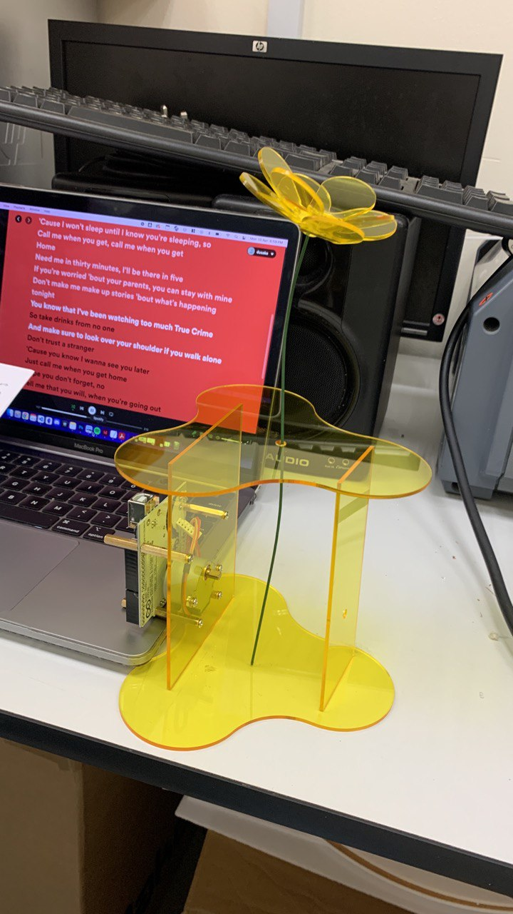
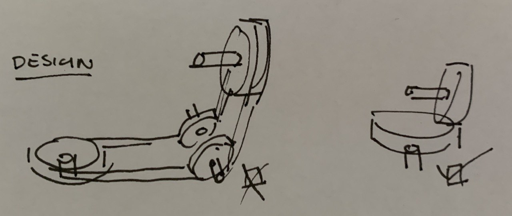

Week 16: Submissions!
Thank you.
Catalogue of Making
Based on last week’s consultation, there’s value to be shared about the historical timeline of mechanical explorations achieved during my study for the ‘perfect’ natural movement. I’ve opted for a printed publication that’s about A4 in size for reader’s ease of reading and enjoyment of larger images.
Finalising the Artefacts
Andreas is unfortunately down with Covid so access to the laser room might be a little scarce but I do hope to continue to use the room to get my pieces done. Otherwise, I don’t have a back-up plan aside from pushing the timeline back to one week and focusing on other items this week.
Moving Greenery
Continuing from last week’s acrylic flower exploration, I’m looking at modular shapes for the pots that can come together in a more holistic manner. The idea, based on the image of these stacked acrylic pieces, reminds me of puzzle pieces shaped oddly like a fidget spinner. But when angled correctly, these blobby triangles blend well with each other. There’s no exact science to figuring out the diameter of these pots (there probably is but I’m not about to get into that rabbit hole now) but I know based on the first ever foamboard base is that it shouldn’t be broader than the height of the flower. With that in mind, the limitation is the width which causes an issue with covering the electronics within the new shape. This wasn’t obvious to me until the first cut where clearly everything sticks out. While I’m okay with the idea of showcasing the inner parts through the acrylic, I find it counterintuitive to expose wires like this within a healthcare space.
An immediate fix to this would be to shift the electronics to the bottom which frees up horizontal space but increases the mechanical complexity. The horizontal rotation now needs a way to be translated into vertical rotation for the automata cams to work. A quick search reveals 2 ways to form this movement. To focus on cleanliness, I opted to recreate the minimalist image with just two gears in different orientations. Without access or knowledge to gears like these, I opted to laser cut them instead. It hopefully will add to the overall see-through aesthetic although I can already predict some issues with friction.
